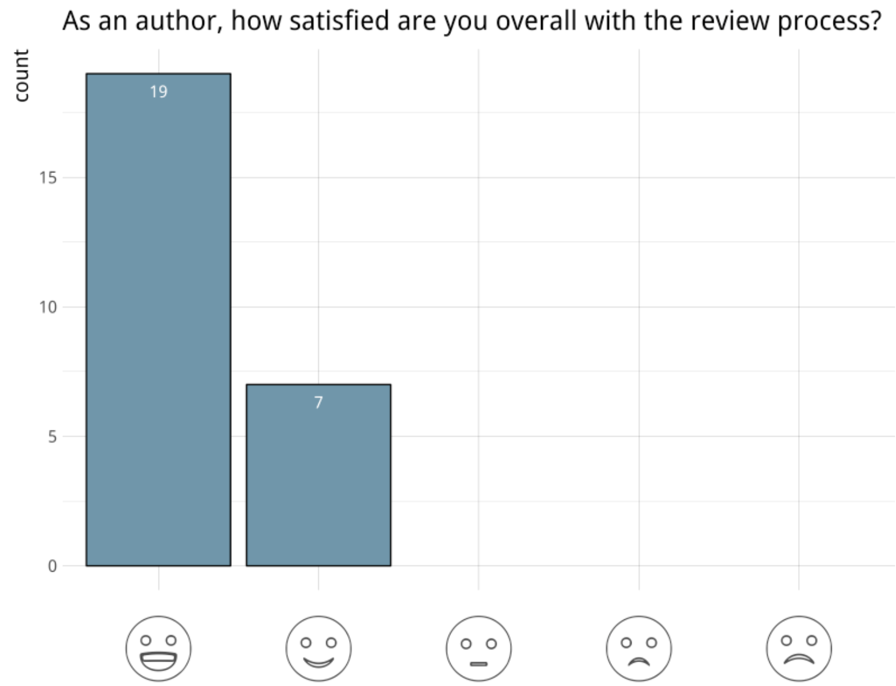
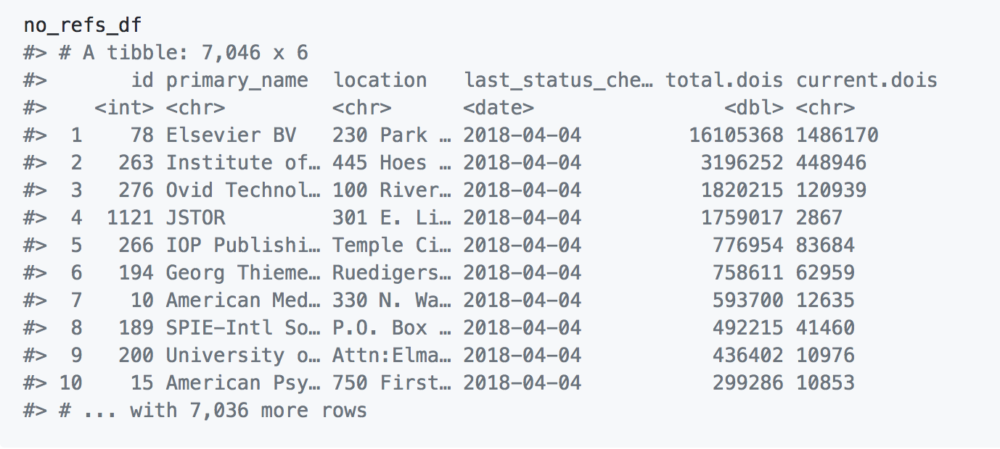
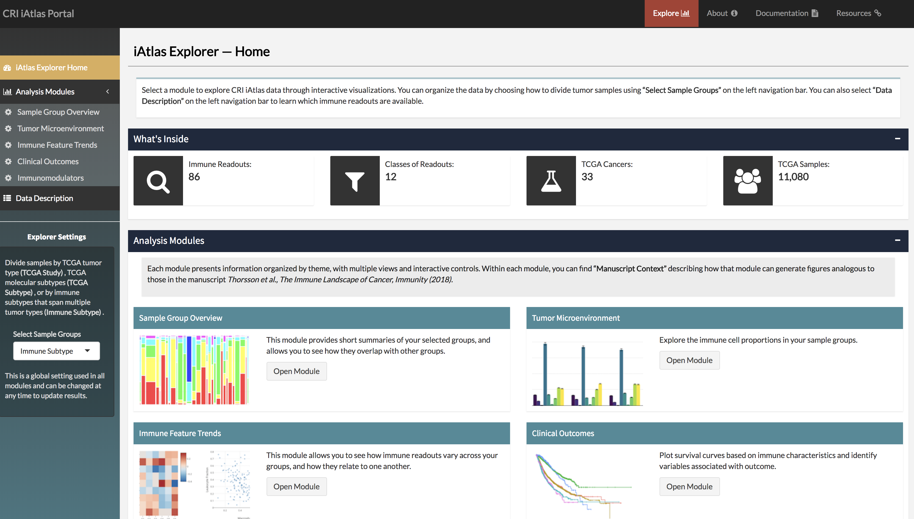
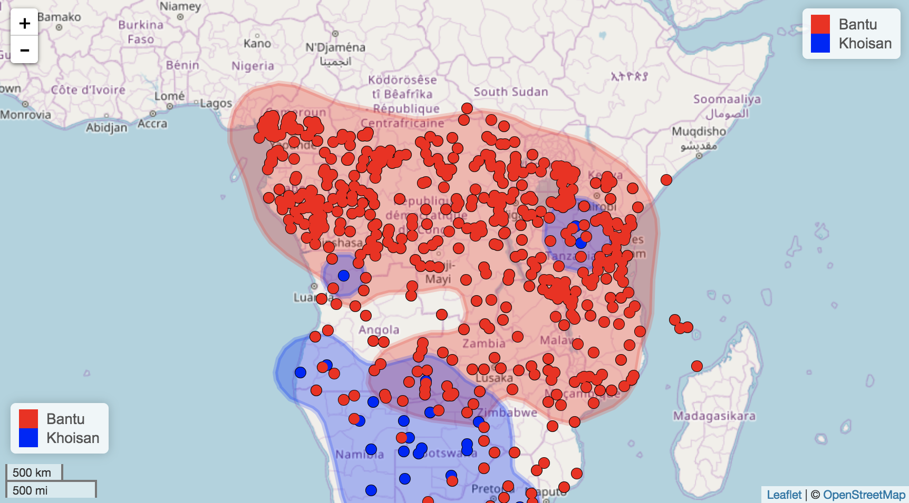

Apr 23, 2018
Software 📦
CRAN:  GitHub:
GitHub: 
New packages
- A new package
nomisr(v0.2.0) is on CRAN.nomisrgives you access to UK official statistics from the Nomis database. Nomis includes data from the Census, the Labour Force Survey, DWP benefit statistics and other economic and demographic data from the Office for National Statistics, based around statistical geographies. This package recently went through rOpenSci review. Check out the nomisr docs to get started.

- A new package
rbraries(v0.1.0) is on CRAN.rbrariesis an R client for Libraries.io - a . Check out the rbraries README to get started.
Releases
- A new version (
v0.3) ofeuropepmcis on CRAN. See the europepmc NEWS for details. Check out the europepmc docs to get started.
Implement version 6 of the Europe PMC in the package
- A new version (
v1.1.0) ofijtiffis on CRAN. See the ijtiff NEWS for details. Check out the ijtiff vignette to get started.
new functions
count_imgs()andread_tags()🎉 - A new version (
v0.7.0) ofrvertnetis on CRAN. See the rvertnet release notes for details. Check out the rvertnet vignette to get started.
added
monthanddayparams tosearchbyterm()mostly to allow date based searching in spocc - A new version (
v0.2.0) ofmonkeylearnis on CRAN. See the monkeylearn NEWS for details. Check out the monkeylearn docs to get started.
new pkgdown docs website, and new functions
monkey_classify()andmonkey_extract()🐵 (also: now w/ cowsay 🐄) - A new version (
v0.6.0) ofrbisonis on CRAN. See the rbison release notes for details. Check out the rbison vignettes to get started.
bison_solr()now supports range queries for certain parameters - like forrvertnet, helps facilitate date based searching in spocc - A new version (
v5.1.2) ofdrakeis on CRAN. See the drake release notes for details. Check out the drake docs to get started.
Software Review ✔
We accept community contributed packages via our onboarding system - an open software review system, sorta like scholarly paper review, but way better. We’ll highlight newly onboarded packages here. A huge thanks to our reviewers, who do a lot of work reviewing (see the blog post on our review system), and the authors of the packages!
If you want to be a reviewer fill out this short form, and we’ll ping you when there’s a submission that fits in your area of expertise.
There’s no now approved submissions or new submissions in the past two weeks.
On the blog
.rprofile series
Keep an eye out for more posts in this series.
main blog
- Rory Nolan wrote about his ijtiff package recently onboarded with rOpenSci: Forcing Yourself to Make Your Life Easier.
- The rOpenSci Editors wrote up findings of our 2018 author and reviewer survey. There’s a lot of nice bar plots that make it easy to quickly get a sense of how our community feels about rOpenSci review.

- Amanda Dobbyn wrote about her experience contributing to one of our packages monkeylearn maintained by our own Maëlle Salmon - Monkeying around with Code and Paying it Forward
Use cases
The following five works use/cite rOpenSci software:
- Barnett used rentrez in his paper Missing the point: are journals using the ideal number of decimal places? 1
- Holmes & Rabosky used taxize in their paper Natural history bycatch: a pipeline for identifying metagenomic sequences in RADseq data 2
- Pajo used tokenizers in their paper Quantitative Falsification for Qualitative Findings 3
- Rastrojo et al. used our R package plotly in their paper Genomic and transcriptomic alterations in Leishmania donovani lines experimentally resistant to antileishmanial drugs 4
- Schwamborn cited rfishbase in his paper How reliable are the Powell-Wetherall plot method and the maximum-length approach? Implications for length-based studies of growth and mortality 5
In the news
Ross Mounce and Najko Jahn wrote up a nice script to answer the question How many publishers have opened-up their references? using our rcrossref package.

James Eddy is using our package plotly in his Shiny web app CRI iAtlas for “studying interactions between tumors and the immune microenvironment”.

Luis Verde wrote a blog post a few months back (updated recently) about pulling tables with data from PDFs using our tabulizer package.
using tidy evaluation to program with #dplyr, here's a function to deal with messy values broken up across rows #rstats #tidyevalhttps://t.co/qjAklOPzlt
— Luis D. Verde (@LuisDVerde) February 15, 2018
Jorge Cimentada wrote a blog post about his package essurvey recently onboarded with rOpenSci.
The ess #rstats package, aimed at downloading data from the @ESS_Survey, has been renamed to essurvey and is now on CRAN and @rOpenSci! the new name comes together with a few new changes that you can checkout in this blogpost: https://t.co/9DYTWplCkg
— Jorge Cimentada (@cimentadaj) April 9, 2018
Peer Christensen wrote a tutorial on using our package lingtypology: Interactive language maps in R with lingtypology

Sam Firke shared a neat use case for our package visdat to look at respondent drop-off throughout a survey.
using vis_miss() from the visdat pkg to look at respondent drop-off throughout a survey #rstats pic.twitter.com/W3XLsLeOuo
— Sam Firke (@samfirke) April 12, 2018
Stephanie Hazlitt wrote a great post about using our rebird package.
One tweet using one graphic about eBird and Rufous Hummingbird arrivals by @DavidFFraser & @stephhazlitt goes all R stats, datavis, GitHub on us. This is really really cool! Have a look. https://t.co/C0gdwAUkE4
— Natural History Soc (@VictoriaNHS) April 14, 2018
Pablo Baberá is teaching a course this summer called Automated Collection of Web and Social Data, which includes teaching students how to do web scraping, including our package RSelenium.
Keep up with rOpenSci
- Mailing list: Sign up with an email address to get this newsletter sent to your inbox -> ropensci.org/#subscribe
- Alternatively, you can subscribe to this newsletter via our XML feed at https://news.ropensci.org/feed.xml or our JSON feed at https://news.ropensci.org/feed.json
- rOpenSci on Twitter: @ropensci
- The rOpenSci blog at ropensci.org/blog - you can subscribe in any RSS aggregator, or manually via https://ropensci.org/feed.xml. We also announce new blog posts on our Twitter account.
Footnotes
-
Barnett, A. (2018). Missing the point: are journals using the ideal number of decimal places? F1000Research, 7, 450. https://doi.org/10.12688/f1000research.14488.1 ↩
-
Holmes, I., & Davis Rabosky, A. R. (2018). Natural history bycatch: a pipeline for identifying metagenomic sequences in RADseq data. PeerJ, 6, e4662. https://doi.org/10.7717/peerj.4662 ↩
-
Pajo, J. (2018). Quantitative Falsification for Qualitative Findings. Social Science Computer Review, 089443931876795. https://doi.org/10.1177/0894439318767956 ↩
-
Rastrojo, A., García-Hernández, R., Vargas, P., Camacho, E., Corvo, L., Imamura, H., … Requena, J. M. (2018). Genomic and transcriptomic alterations in Leishmania donovani lines experimentally resistant to antileishmanial drugs. International Journal for Parasitology: Drugs and Drug Resistance. https://doi.org/10.1016/j.ijpddr.2018.04.002 ↩
-
Schwamborn, R. (2018). How reliable are the Powell-Wetherall plot method and the maximum-length approach? Implications for length-based studies of growth and mortality. arXiv 1804.05162 https://arxiv.org/abs/1804.05162 ↩